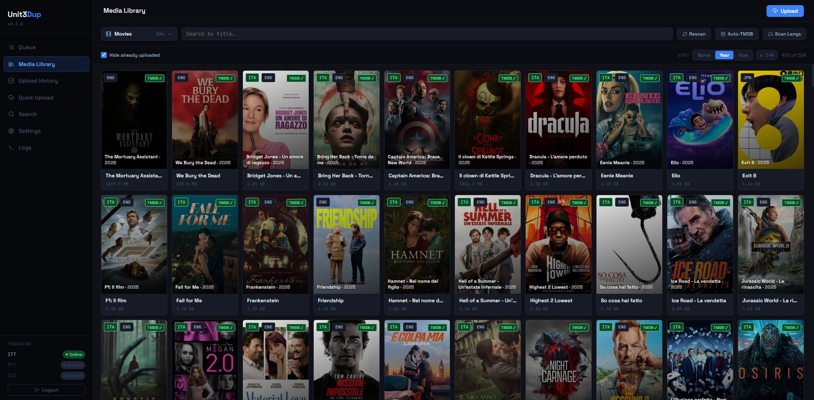

unit3dprep¶


Web UI + CLI pre-flight uploader for Unit3D trackers — paired over HTTP with Unit3DWebUp as the upload backend.
unit3dprep handles the pre-flight (Italian audio check, ItaTorrents naming, hardlink) and orchestrates Unit3DWebUp as upload bot via HTTP API + WebSocket. No more unit3dup CLI subprocess: everything goes through setenv → scan → maketorrent → upload → seed with live logs in the browser.

Two usage modes
- CLI — interactive flow for a single file or an entire season. Ideal over SSH. The CLI also drives the HTTP bridge to Unit3DWebUp for the upload phase.
- Web UI — React SPA served by FastAPI. Guided wizard, library, upload queue, history, settings, real-time logs, integrated auto-update.
Architecture¶
┌─────────────────────┐ HTTP+WS ┌──────────────────────┐
│ unit3dprep │ ────────────> │ Unit3DWebUp │
│ (FastAPI + React) │ <──────────── │ (FastAPI bot) │
└─────────┬───────────┘ SSE └──────────┬───────────┘
│ │
│ hardlink │ /maketorrent /upload /seed
▼ ▼
~/seedings/ tracker (ITT/PTT/SIS) + qBittorrent
│ ▲
└─────────── shared .env ──────────────┘
($ENVPATH/.env)
unit3dprepexposes the UI, the media library and the pre-flight wizard.Unit3DWebUpis the upload bot (FastAPI + Redis + ffmpeg) that talks to trackers and torrent clients.- The two processes share a single
.envfile (path fromENVPATH/U3DP_ENV_PATH) → single source of truth for tracker credentials, torrent client, image hosts, preferences.
What it does¶
- Scans your library (subfolders of
U3DP_MEDIA_ROOT, default~/media). - Checks for Italian audio tracks via
pymediainfo. - Fetches official metadata from TMDB.
- Builds the final filename per the ItaTorrents naming convention.
- Hardlinks the renamed file into
U3DP_SEEDINGS_DIR(default~/seedings, same filesystem required). - Syncs paths to Unit3DWebUp via
POST /setenv, then runs/scan→/maketorrent→/upload→/seed. - Streams real-time logs and progress from both processes over SSE/WebSocket in the UI.
- Records the outcome (exit code, tracker, timestamp) in the JSON history shown in the Web UI.
Quick start¶
# 1. Install both packages (same venv or two separate venvs)
pip install -e .
pip install Unit3DwebUp
# 2. Generate password hash + session secret
python generate_hash.py
# 3. Export the variables (or put them in ~/.bashrc / a systemd .env file)
export U3DP_PASSWORD_HASH='$2b$12$...' # single quotes! the $ must NOT expand
export U3DP_SECRET="..."
export TMDB_API_KEY="..."
export U3DP_PORT="8765"
export ENVPATH="$HOME/.config/unit3dprep" # directory of the shared .env
# 4. Start Unit3DWebUp (needs Redis on 127.0.0.1:6379 and ffmpeg installed)
ENVPATH=$HOME/.config/unit3dprep uvicorn unit3dwup.start:app --host 127.0.0.1 --port 8000 &
# 5. Start the Web UI
unit3dprep-web
Open http://127.0.0.1:8765, log in, go to Settings and complete tracker / qBittorrent / image hosts. Every setting is persisted to $ENVPATH/.env with the canonical naming and propagated live to Unit3DWebUp via setenv (no restart needed).
For full details see Installation, Configuration and Unit3DWebUp integration.
Deployment guides¶
- VPS with sudo / Docker — generic Linux server with two systemd units (app + bot), nginx + Let's Encrypt.
- Ultra.cc — Ultra.cc seedbox with reserved port, systemd user units for the two processes, nginx user-proxy.
Tech stack¶
| Component | Technology |
|---|---|
| App backend | FastAPI + uvicorn + Starlette |
| SSE | sse-starlette |
| Auth | bcrypt + itsdangerous (session cookies) |
| Frontend | React 18 + Vite + TypeScript + lucide-react |
| Filename parsing | guessit |
| MediaInfo | pymediainfo (requires libmediainfo) |
| Metadata | TMDB API v3 (our lookup + Unit3DWebUp) |
| Bot bridge | httpx + websockets toward Unit3DWebUp |
| Upload backend | Unit3DWebUp (FastAPI + Redis + ffmpeg) |
| Persistence | JSON files (no SQLite — _sqlite3 broken on pyenv Python 3.13) |
Useful links¶
- Repo: https://github.com/davidesidoti/unit3dprep
- ItaTorrents: https://itatorrents.xyz
- TMDB API: https://www.themoviedb.org/settings/api
- Unit3DWebUp (PyPI): https://pypi.org/project/Unit3DwebUp/
- Unit3DWebUp (GitHub upstream): https://github.com/31December99/Unit3DWebUp